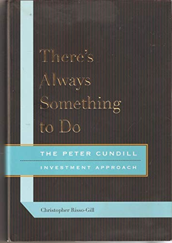

彼得·坎迪尔（F. Peter Cundill，1938—2011）从1963年起坚持写日记，前后持续四十五年。他在麦吉尔大学读完商学学士后取得特许会计师和特许金融分析师资格；1975年接手All-Canadian Venture Fund，1977年将其更名为Cundill Value Fund，并成立Peter Cundill & Associates。Mackenzie Investments在1998年先收购Cundill Funds，2006年再买下其余投资管理业务；普雷姆·沃萨在本书序言中写道，Cundill旗下基金的资产由起步时约800万美元增至2006年的近200亿美元。因此，原书把规模终点放在2006年，而不是1998年的第一阶段交易。作者克里斯托弗·里索-吉尔（Christopher Risso-Gill）是坎迪尔多年的同事与朋友，凭借日记、演讲稿与访谈记录完成这部传记，2011年由麦吉尔-皇后大学出版社出版。书名出自老投资人欧文·卡恩（Irving Kahn）对坎迪尔的提醒："总有事可做，你只是需要更努力地寻找，更有创造力，也更灵活一些。"
坎迪尔的投资框架建立在格雷厄姆-多德式的资产型价值投资之上，书中列出了他1974年为基金设定的筛选标准：股价低于账面价值，最好低于净营运资本减去长期负债；股价低于历史最高价的一半，接近历史低点；市盈率低于10倍，或低于长期公司债利率的倒数（取两者中较低者）；公司连续五年以上盈利且无亏损年份；持续或增长的股息；负债水平审慎、留有扩张空间。1974年他买入蒂芙尼（Tiffany & Co.）就是典型案例——公司账面上，著名的"蒂芙尼钻石"只记为1美元，第五大道的物业自1940年起就没有重估，商誉记为零，股价却跌到账面价值以下；他以每股8美元买入3%的股份，一年内以19美元卖出，半年后Avon以每股50美元收购了蒂芙尼，坎迪尔后来懊悔地写道，他本该问对方"是不是任何价格都不卖"。类似的还有克利夫兰-克里夫斯公司（Cleveland-Cliffs），坎迪尔在6至15美元区间反复建仓减仓，靠公司账面上被严重低估的密歇根电厂资产，滚动出约30%的复合回报。他最惨的一笔交易发生在互联网泡沫期间：因误判Cable & Wireless旗下光纤子公司的价值，在1亿美元投资上亏损了5900万美元——此后他在团队里专门设立了"魔鬼代言人"角色，强制有人唱反调。1987年"黑色星期一"前，因为多头持仓不断触发"翻倍卖出一半"的自动止盈规则，基金账上已积累超过四成的货币市场工具，使得坎迪尔得以在崩盘后从容抄底，当年逆势收涨13%。他反对委员会式决策，认为"优异的业绩记录都是独裁者创造的，希望是仁慈的独裁者，但终究是独裁者"，主张在明确框架内由个人而非集体拍板。
Fairfax Financial创始人普雷姆·沃萨（Prem Watsa）为本书作序。沃萨回忆，坎迪尔多年不买Fairfax，并非否定公司，而是一直等到价格达到他所说"用四毛钱买一块钱"（buying a dollar for 40 cents）的折扣。沃萨同时给出本书采用的长期业绩口径：Cundill Value Fund在三十三年间年均复合回报15.2%；这比只列某个高回报阶段更能反映深度价值策略漫长的等待期。巴菲特被问及是否会考虑美国之外的投资经理时，也曾回答可以是"像彼得·坎迪尔这样的人"，但同时说明双方并未就职位谈判。书中还记录了坎迪尔1992年前后的严重情绪低潮，以及他从38岁开始跑马拉松、一生完成二十余场比赛的经历；这些材料来自私人日记，使传记没有把职业纪录写成一条不间断的上升线。
坎迪尔的做法与常见的美股价值投资叙事不同之处在于其地理跨度：他常年在日本、香港、欧洲各地市场之间寻找错定价的资产，甚至涉足陷入违约的主权债务。书中提到他每年12月都会去当年表现最差的股票市场走一趟，理由很直接——旅行本身能带来一线的市场直觉和被忽视的便宜股票。他将"耐心"列为价值投资者最重要的素质，反复强调"耐心，耐心，还是耐心"，但也提醒读者区分耐心与固执的界限——如果买入后基本面持续恶化，还嘴硬说自己在坚持价值投资，那就是在自欺。对于关心资产定价、逆向投资和长期持有纪律的读者，这本书提供的不是一套可复制的选股公式，而是一份跨越四十五年、逐日记录下来的决策样本——包括那些买早了、卖早了、看错了的时刻。